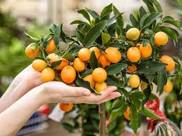
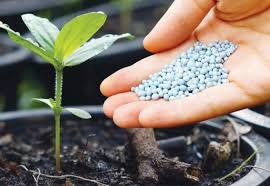

O Brasil é detentor da maior diversidade genética vegetal do mundo, contando com mais de 55.000
espécies
catalogadas, de um total estimado entre 350.000 e 550.000 (Dias, 1996). Considerando-se que mais da
metade
dessas espécies têm ocorrência nas florestas tropicais, cuja área corresponde a apenas 7% da
superfície
da terra (Soejarto, 1996), essas regiões devem ser consideradas como prioritárias nos programas de
conservação.
Dentre estas regiões, destaca-se o bioma Mata Atlântica, que ocupa a quinta posição no cenário
mundial
em
termos de diversidade e endemismo de plantas vasculares (Pinto, 1996) e está entre os cinco
principais
"hotspots" (Mittermeir et al., 1992). Esta floresta é considerada uma das mais ameaçadas do mundo
(SOS
Mata Atlântica, 1998) e apesar de reduzida e fragmentada, possui importância relevante, pois exerce
influência
direta na vida de mais de 80% da população brasileira que vive nesse domínio; desde centros urbanos
até
áreas rurais, comunidades caiçaras e indígenas, ela se relaciona ao fluxo de mananciais hídricos,
contribui
para a fertilidade do solo, além de controlar o clima e proteger escarpas e encostas das serras,
sendo
também, parte do patrimônio histórico e cultural (Schäffer & Prochnow, 2002; Medeiros, 2002).
Condições Climaticas Também Favorecem Mas Faça Sua Parte
Existem varia maneiras de se começar e para todo tipo de planta seja nativa ou não você pode utilizar de
tecnicas e tambem de produtos que vao te ajudar.
$ O melhor para suas plantas produtos 100% Naturais
e com a Qualidade comprovada...

$ O melhor para suas plantas produtos 100% Naturais
e com a Qualidade comprovada...

Segue o teu destino...
Rega as tuas plantas;
Ama as tuas rosas..
O resto é a sombra
de árvores alheias